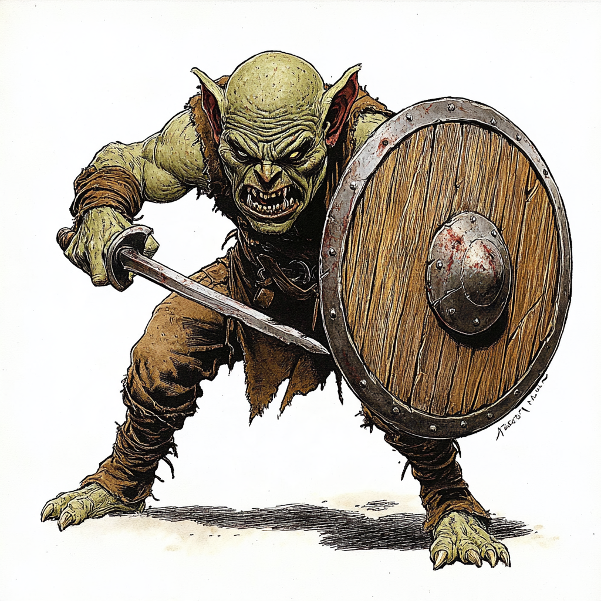
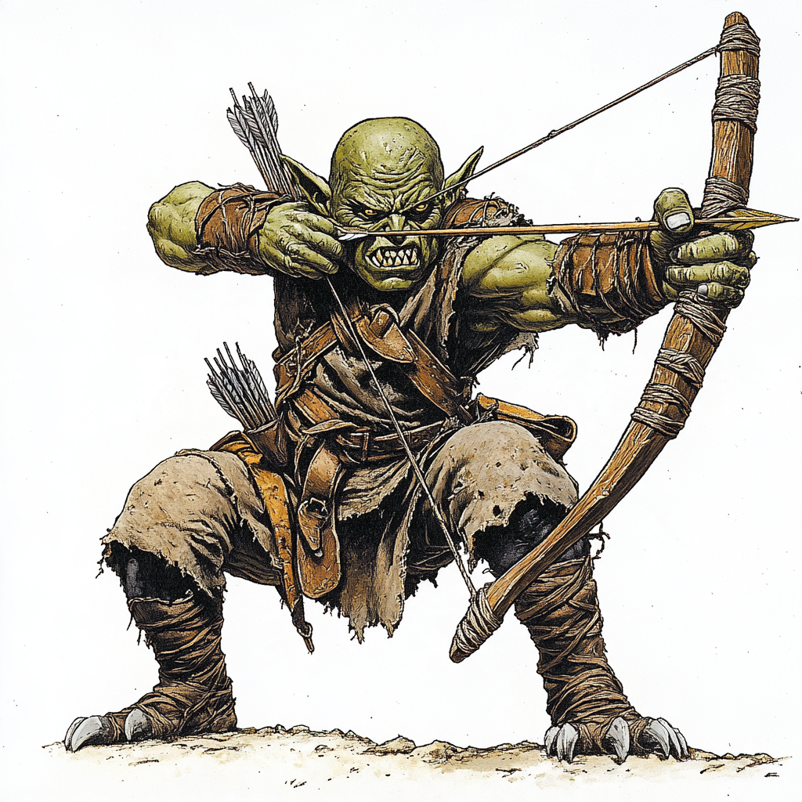

★☆☆INIT: 5
Goblin-Späher
◈ Standard-Gegner · Schwarm / Nahkampf

»Fliehende, feige Halsabschneider der Banden. Sie lauern in dunklen Felsspalten und greifen bevorzugt im Rudel aus dem Hinterhalt an.«
❤️ Leben3
🛡️ Abwehr5
👟 Bew.4
⚔️ Angriff+1 (1D)
📜 Sonderregel
Rudel-Taktik: Greift bevorzugt Helden an, an die bereits ein Verbündeter angrenzt (+1 auf Angriffswurf).
⚔️ KI-Verhalten
- 1.Schwarm-Angriff: Zieht auf den Helden zu, der bereits gebunden ist. Andernfalls auf das nächste Ziel.
- 2.Rostdolch: 1d6 + 1 gegen VT des Helden (1 Schaden).
- 3.Feigheit: Fällt er auf 1 LP, weicht er mit voller Bewegung vor dem nächsten Helden zurück.

★☆☆INIT: 6
Goblin-Schütze
◈ Standard-Gegner · Hinterhalt-Fernkampf

»Schießt mit gezackten Knochenpfeilen aus dem Schatten. Feige im direkten Nahkampf, doch heimtückisch und tödlich auf Distanz.«
❤️ Leben2
🛡️ Abwehr4
👟 Bew.3
🏹 Knochen+2 (R4)
📜 Sonderregel
Plänkler: Steht ein Held angrenzend, weicht er 2 Felder zurück (ohne Gelegenheitsangriff) und feuert dann.
⚔️ KI-Verhalten
- 1.Abstand halten: Hält nach Möglichkeit 3–4 Felder Distanz zu allen Helden.
- 2.Zielwahl: Visiert den Helden mit den wenigsten verbleibenden LP in Sichtlinie an.
- 3.Knochenpfeil: 1d6 + 2 gegen VT (1 Schaden).